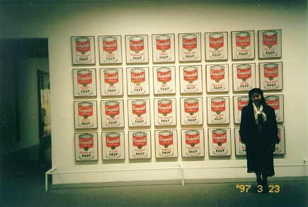

近代美術館 (97.3)
アンディ・ウォーホールの絵の前で


=空缶の絵の前で(97.3)=
|
大きいでしょう？ 留学する前まで、「好きな画家は？」と聞かれると印象派の誰かをあげていました。でも、こっちに来てからアート専攻の留学生たちと話すようになってだんだん、抽象画も見るようになってきました。みんな、よく知ってます。 誰に聞いても「近代美術館はいい美術館だ」と言います。いろいろなものが網羅されているし、並べる順番なんかもきちんと考えてあるんですって。 妹夫婦（イラストレーター）が遊びに来たときも、「細かいところまできちんとコーディネートされている」と言っていました。 ニューヨークと言えばメトロポリタン美術館が有名だけど、ニューヨークをよく知ってる人は「近代美術館が一番いい」という人が多いような気がします。 |
[ホームへ] [写真一覧へ]